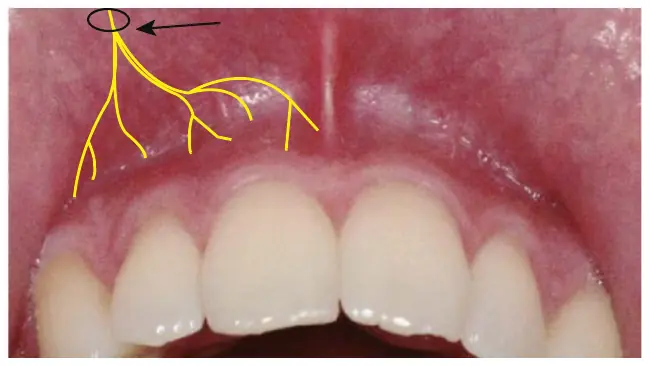

نسخه استخراجشده؛ ترجمه یا تأیید علمی انجام نشده است. وضعیت: captured
بیمار ۶۰ کیلویی برای ترمیم سانترال، لترال، کانین و پرمولر اول بالا سمت راست آمده است. همکارت میخواهد روی هر دندان یک اینفیلتراسیون بزند و تو یک بلاک ASA (آلوئولار فوقانی قدامی) پیشنهاد میکنی. کدام انتخاب منطقیتر است؟

اینفیلتراسیون سوپراپریوستئال در فک بالا بیش از ۹۵٪ موفق، ساده و معمولاً بیدرد است و برای هر دندان حدود ۰٫۶ میلیلیتر میخواهد. اما برای بیش از دو یا سه دندان دو مشکل دارد:
بلاک ASA با ۰٫۹ تا ۱٫۲ میلیلیتر همان دندانهایی را بیحس میکند که اینفیلتراسیونهای جداگانه برایشان حدود ۳ میلیلیتر دارو میخواهند.
استخوان متراکم روی اپکس بیشتر در دو جا اینفیلتراسیون را ناموفق میکند: مولر اول دائمی کودک که اپکس آن زیر استخوان زایگوماتیک است، و گاهی سانترال بزرگسال زیر استخوان بینی.
نکتهی طلایی: بلاک ASA در حدود ۲۸٪ بیماران پرمولرها را بیحس نمیکند. اگر پرمولر در طرح درمان است، پیش از کار بسنج و در صورت نیاز بلاک MSA یا اینفیلتراسیون اضافه کن.